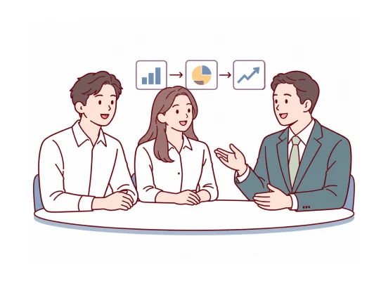

01
系統設計師 / 系統分析師
透過程式開發及維運奠定技術能力，負責溝通及分析使用者需求，結合技術與業務，規劃最適化系統功能及模組，扮演系統最佳化推手。
邁向金控 2.0 時代， 結合銀行、人壽、證券、投信版圖， 玉山將更加茁壯 新氣象、新挑戰、新里程， 迎接更璀璨的未來 我們等你來 +1
Fintech
深耕資訊技術，參與全行銀行（台北、高雄）及人壽（台北）系統發展，運用科技及創新技術提升金融服務，成為專案管理及架構專家。
01
透過程式開發及維運奠定技術能力，負責溝通及分析使用者需求，結合技術與業務，規劃最適化系統功能及模組，扮演系統最佳化推手。
02
具專業知識、整合跨團隊合作與資源協調，快速識別問題並提出有效解決方案，負責帶領團隊完成系統專案，成為團隊中Leader。
03
具備專業領域技術，能權衡架構與技術價值和風險，以系統性思維統籌整體偕同運作，亦為未來和創新活動提供解決方案。
AI-Big Data
運用數據驅動決策，結合機器學習與最新AI技術解決商業痛點、統籌企業級系統架構，成為推動科技落地的全方位菁英人才。
01
運用數據找尋商業洞見，透過資料分析、機器學習、整合LLM等方式，佈局各類場景AI Agent 與 AI copilot之應用。
02
運用雲端與開源技術打造企業級 MLOps 平台與高可用分散式架構，加速 AI 模型的敏捷開發與規模化部署，賦能各類金融服務。
03
具備流程梳理、需求訪談、技術評估、鑑別商業價值的能力，透過目標設定、時程規劃、溝通協調，將業務需求轉化為可行的專案。
Information Security
透過建立資安策略整合監控防禦機制，以有效推動並落實全行資安管理制度，提供安心信賴的金融服務，成為資訊安全專家。
01
具備系統運維管理、監控防禦及以機器學習技術分析事件等資安技術能力，鑽研駭客攻擊手法、分析威脅情資及設計偵測方法。
02
具備紅隊攻擊思維，從攻擊者視角評估與強化應用程式安全，執行漏洞掃描、程式碼安全審查、滲透測試與AI服務檢測，確保資訊系統安全性。
03
掌握國內外資安規範與國際標準，具備資安及個資管理制度規劃、推動與新興科技風險評估能力，運用AI等科技建構高效、智能資安治理模式。
讓每一步歷練，成為未來的底氣
2個月

STEP 01
3個月
STEP 02
培育開發與數據分析實力，建立資安防禦思維，打造全方位科技人才。
9個月
STEP 03
鍛鍊業務洞察、資料庫開發與資安系統建置，養成全方位技術實務戰力。
1年半
STEP 04
掌握架構設計、資料探勘與風險評估，養成具備專案管理力的數位領袖。
3年以上
STEP 05
深耕領域專業與前瞻架構，引領技術研發，展現技術與管理領導力。
期待具備以下特質的你
STEP 1
履歷資料審核
STEP 2
專業能力測驗與團體交流面談
STEP 3
經營團隊面談
STEP 4
錄取說明會
STEP 5
TMA報到培育訓練開始